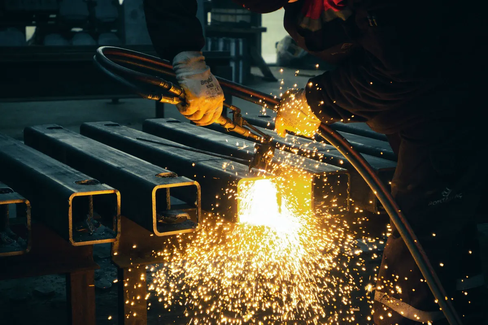
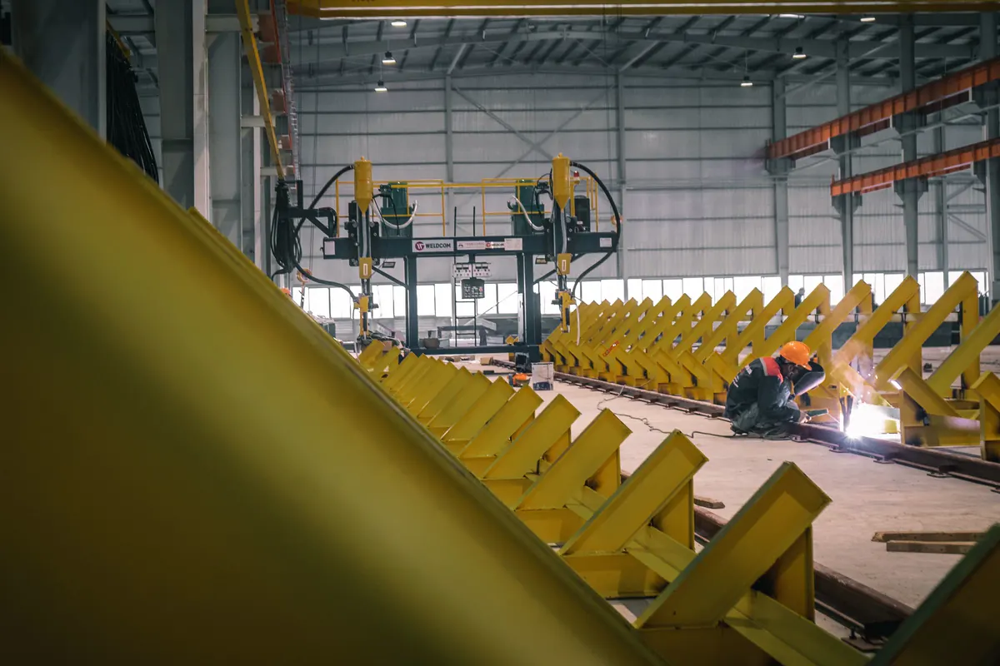

Fabricar na fábrica, montar no campo
Esta página trata do que acontece dentro da fábrica: como barras e chapas de aço viram peças e conjuntos prontos para montar. A compra e a especificação do material estão em fornecimento de aço estrutural; o içamento, o aparafusamento e o prumo no terreno estão em montagem de estruturas metálicas; e a visão do serviço completo, do projeto à entrega, fica na página de estruturas metálicas em Vitória ES.
Na Axial Engenharia a estrutura metálica é feita do zero — projeto, material, fabricação, montagem e obra completa, com ART. A fabricação é a etapa em que mais se decide a qualidade final: é onde a solda é executada e inspecionada, onde a geometria é conferida e onde a peça recebe a proteção contra corrosão. Atendemos indústrias, comércio, condomínios e obras em Vitória, Vila Velha, Serra, Cariacica e região.
Por que não soldar tudo no campo
- Qualidade: na fábrica a peça é girada para soldar na posição plana ou horizontal, sem vento, chuva ou umidade, com gabarito e com o soldador trabalhando no chão. No campo a mesma solda sai em posição vertical ou sobrecabeça, muitas vezes em altura.
- Prazo: a fábrica produz enquanto a fundação está sendo executada. Quando o terreno libera, as peças chegam prontas e a montagem vira uma sequência de içamento e aparafusamento.
- Segurança: cada hora de solda e de esmerilhamento que sai da obra é uma hora a menos de trabalho a quente e em altura, com os controles da NR-18 e da NR-35 que isso exige.
- Inspeção: a solda é inspecionada e corrigida antes da pintura. Solda de campo é inspecionada em condição pior e ainda precisa de retoque de pintura no local.
Por isso o projeto prevê, sempre que possível, ligações soldadas na fábrica e parafusadas no campo. A divisão em conjuntos também respeita o transporte: o comprimento e a largura da peça precisam caber na carreta e passar pelas vias até a obra.
Detalhamento de fabricação: desenho de peça e de conjunto
O projeto estrutural define perfis, ligações e cargas, mas não é suficiente para fabricar. Antes do primeiro corte a estrutura é detalhada, e isso gera dois tipos de desenho:
- Desenho de conjunto: mostra a peça que sai da fábrica como um volume único — uma coluna com placa de base e consoles, uma viga com chapas de ligação, um módulo de treliça — com as cotas de montagem, a posição de cada componente e as soldas indicadas por simbologia.
- Desenho de peça (ou de parte): cada chapa, cantoneira ou trecho de perfil que compõe o conjunto, com comprimento de corte, chanfro, furação, dobra e identificação.
Do detalhamento saem também a lista de material, que alimenta o pedido de aço, o plano de corte que reduz a sobra de barra e chapa, e a lista de parafusos por ligação. Um erro de cota encontrado no desenho custa uma revisão; encontrado na obra, custa corte, solda e pintura refeitos no alto.

Corte, furação e dobra
Corte
Cada processo de corte serve a um tipo de peça, e a escolha afeta a qualidade da borda e o trabalho que vem depois:
| Processo | Uso típico | Ponto de atenção |
|---|---|---|
| Serra de fita | Perfis laminados, soldados e tubos cortados no comprimento | Corte reto ou em ângulo, com borda limpa e sem zona afetada pelo calor |
| Oxicorte | Chapas grossas, placas de base, chanfros para solda | A borda precisa de limpeza de escória e, conforme a espessura, de esmerilhamento |
| Plasma | Chapas finas e médias, recortes e peças de contorno | Mais rápido em espessura menor; conferir esquadro e chanfro da borda |
| Guilhotina | Chapas finas e tiras retas | Limitada pela espessura e pelo comprimento da máquina |
Furação
Furos de ligação parafusada são feitos por furadeira ou puncionadeira, no diâmetro e na posição do desenho. Furo aberto a maçarico no campo, para "fazer o parafuso passar", deixa borda irregular e reduz a capacidade da ligação — é um dos defeitos mais comuns em estrutura mal fabricada. Nas peças que vão para galvanização, os furos de respiro e de dreno também são abertos nesta etapa.
Dobra e calandragem
Chapas dobradas para consoles, perfis formados a frio, cantoneiras especiais e peças curvas para cobertura em arco passam por prensa dobradeira ou calandra. O raio de dobra respeita a espessura e o aço especificado, para não trincar a face externa.

Montagem de conjuntos e soldagem qualificada
As peças cortadas são ponteadas no gabarito, conferidas contra o desenho de conjunto e só então soldadas. É nesta etapa que se fabricam os pórticos de galpão metálico, as treliças de cobertura de quadra, as vigas soldadas de alma cheia e os conjuntos de caldeiraria estrutural, como suportes de equipamento, plataformas e escadas.
Processos de soldagem
- Eletrodo revestido (SMAW): versátil, usado em reparos, peças avulsas e posições difíceis.
- MIG/MAG (GMAW): arame contínuo com gás de proteção, produtivo para a maior parte das soldas de fábrica.
- Arame tubular (FCAW): boa taxa de deposição e penetração em chapas médias e grossas.
- Arco submerso (SAW): automatizado, usado em soldas longas e contínuas, como a união de mesa e alma de viga soldada.
Procedimento e soldador qualificados
Solda estrutural não é "saber soldar". A referência mais usada é o código AWS D1.1, que exige uma especificação de procedimento de soldagem (EPS/WPS) — processo, consumível, posição, preparação da junta, parâmetros elétricos e pré-aquecimento quando necessário — pré-qualificada pelo próprio código ou qualificada por ensaio, com o registro correspondente. O soldador, por sua vez, é qualificado para o processo e a posição em que vai trabalhar, com registro de qualificação. Sem esses documentos, a solda depende só da habilidade individual, sem rastreabilidade.
O controle de distorção faz parte do procedimento: sequência de soldagem, solda alternada em lados opostos e fixação no gabarito evitam que a viga saia torta ou empenada depois de esfriar.
Controle dimensional e inspeção de solda
Antes da pintura, cada conjunto é medido: comprimento, esquadro, posição e diâmetro dos furos, distância entre furos de ligações opostas, flecha e empeno. As tolerâncias são as do projeto e da norma de referência adotada. Peça fora de tolerância é corrigida na fábrica — no campo, vira furo alargado, calço improvisado ou solda sem controle.
A solda é inspecionada em camadas. A inspeção visual é feita em todas elas, procurando trinca, porosidade, mordedura, falta de fusão e dimensão de filete abaixo do especificado. Nas soldas que o projeto indica, entram os ensaios não destrutivos:
| Ensaio | O que encontra | Onde costuma ser aplicado |
|---|---|---|
| Visual | Defeitos superficiais e dimensão da solda | Todas as soldas |
| Líquido penetrante | Trincas e poros abertos à superfície | Soldas de filete, raízes, reparos |
| Partículas magnéticas | Trincas superficiais e logo abaixo da superfície | Soldas de filete em aço carbono |
| Ultrassom | Falta de fusão, trinca e inclusão no interior da solda | Soldas de penetração total críticas: emendas de viga, ligações de pórtico |
Os resultados vão para relatório, junto com o registro dimensional. O conjunto só segue para a pintura depois de liberado.
Preparação de superfície, pintura e galvanização
A proteção contra corrosão começa na limpeza. Carepa de laminação, óleo, respingo de solda e oxidação são removidos por jateamento abrasivo ou por limpeza mecânica, no grau de preparação que o esquema de pintura exige (a ISO 8501-1 é a referência usual de padrão visual). Arestas vivas são quebradas e respingos são removidos, porque tinta não se sustenta sobre canto afiado.
O esquema de pintura — primer, intermediária e acabamento, com espessura de película seca definida — é escolhido pela agressividade do ambiente. Na Grande Vitória, com atmosfera marinha e poeira industrial, economizar nessa etapa é a origem de boa parte dos casos que chegam depois como patologia e corrosão estrutural. A espessura é medida com medidor de película após cada demão.
A alternativa é a galvanização por imersão a quente (ABNT NBR 6323), feita em galvanizadora. Ela exige que toda a solda e toda a furação estejam prontas antes do banho, que as peças caibam na cuba e que tubos e caixões fechados tenham furos de respiro e dreno. Faixas de ligação parafusada e regiões de solda de campo recebem tratamento específico, definido no projeto.
Marcação das peças e expedição para a obra
Cada conjunto recebe a sua marca de montagem — o mesmo código que aparece no desenho de conjunto e no diagrama de montagem —, gravada ou pintada em posição visível e repetida quando a peça tem lado certo para montar. Parafusos, porcas e arruelas são separados por ligação e identificados.
A expedição segue a sequência de montagem: chegam primeiro as colunas e os chumbadores, depois as vigas, os contraventamentos e, por fim, terças e fechamentos. As peças são amarradas com proteção nos pontos de apoio, para não danificar a pintura, e acompanhadas de romaneio. Assim a equipe de montagem no campo recebe o que precisa na ordem em que vai usar, sem procurar peça no meio da pilha. Em obra completa em estrutura metálica, fabricação e montagem são planejadas juntas desde o detalhamento.
A entrega da fabricação é documentada: certificados do material, registros de soldagem, relatórios dimensionais e de ensaios, e registro de pintura ou certificado de galvanização. Em estrutura para indústria, esse pacote costuma ser exigência do cliente e se integra ao dossiê de montagem industrial.
Perguntas frequentes sobre fabricação de estruturas metálicas
Qual a diferença entre fabricação e montagem de estrutura metálica?
Fabricação é tudo o que acontece na fábrica: transformar barras e chapas em peças e conjuntos prontos, cortados, furados, soldados, inspecionados, pintados e identificados. Montagem é o trabalho no campo: descarregar, içar, posicionar, aparafusar, prumar e nivelar essas peças sobre a fundação. Uma fabricação bem feita reduz a montagem a ligações parafusadas e poucos ajustes; uma fabricação ruim transfere para o campo o retrabalho que deveria ter ficado na fábrica.
Por que não soldar a estrutura inteira no local da obra?
Porque no campo a solda é feita em posição difícil, com vento, chuva e umidade, sem gabarito, muitas vezes em altura e com inspeção mais limitada. Na fábrica a peça é posicionada para soldar na posição mais favorável, o processo é mais produtivo, o controle dimensional é feito com a peça no chão e a inspeção acontece antes da pintura. Por isso as ligações de campo costumam ser parafusadas, e a solda de campo fica restrita ao que o projeto realmente exige.
Que norma rege a soldagem de estruturas metálicas?
O dimensionamento da estrutura de aço segue a ABNT NBR 8800, e a de perfis formados a frio a ABNT NBR 14762. Para a soldagem em si, a referência mais usada em estrutura de aço é o código AWS D1.1, que trata de procedimento de soldagem, qualificação de soldadores, execução, tolerâncias e critérios de inspeção. O que vale em cada obra é o que está especificado no projeto; quando o projeto não indica, isso é definido antes de a fabricação começar.
Toda solda de estrutura metálica precisa de ultrassom?
Não. A inspeção visual é feita em todas as soldas. Líquido penetrante e partículas magnéticas entram para procurar trinca superficial em soldas de filete e em pontos críticos. O ultrassom é aplicado nas soldas de penetração total que o projeto define como críticas, como emendas de viga e ligações de pórticos. A extensão de cada ensaio é definida pelo projeto e pelo plano de inspeção, não pela preferência de quem fabrica.
Pintura ou galvanização: qual escolher para a estrutura?
Depende da agressividade do ambiente, do acesso para manutenção e do tamanho das peças. Na Grande Vitória, com atmosfera marinha e industrial, as duas soluções funcionam desde que bem especificadas. A pintura exige jateamento, esquema de tintas adequado ao ambiente e repintura periódica. A galvanização a fogo protege por mais tempo com menos manutenção, mas limita o tamanho da peça ao banho da galvanizadora e exige furos de respiro e dreno nas peças fechadas, previstos já no detalhamento.
Fabricação de estruturas metálicas na Grande Vitória
Peças fabricadas, inspecionadas e entregues para obras em toda a região:
Tem o projeto e precisa das peças?
Envie o projeto estrutural ou os desenhos. Retornamos com escopo de fabricação, esquema de proteção e proposta.
Continue lendo
- Estruturas metálicas em Vitória ES — do projeto à entrega
- Fornecimento de aço estrutural: perfis, chapas e certificados
- Montagem de estruturas metálicas no campo
- Ensaios não destrutivos: ultrassom, líquido penetrante e partículas magnéticas
- Galpão metálico: projeto, fabricação e montagem
- Patologias e corrosão em estruturas